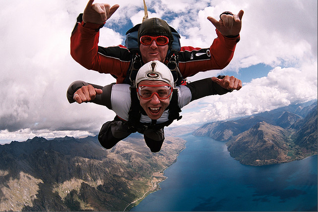
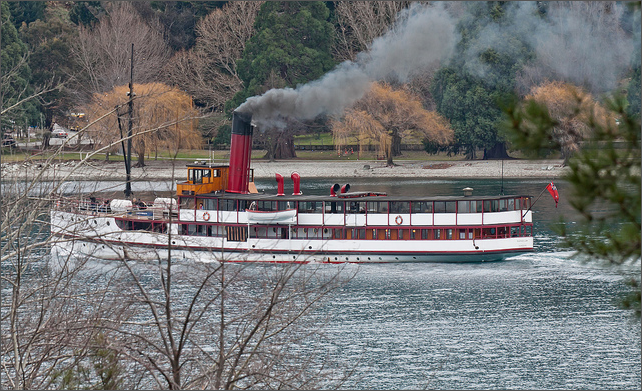
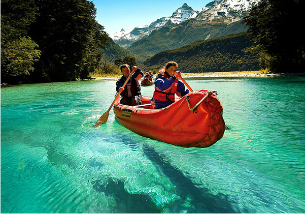
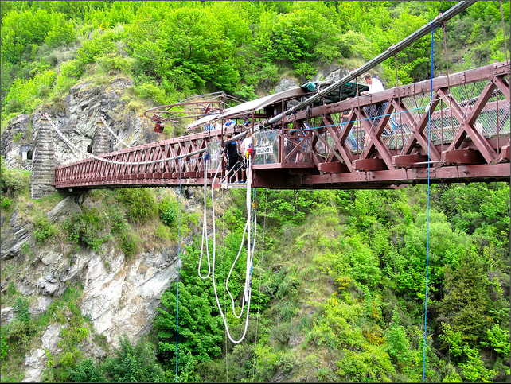
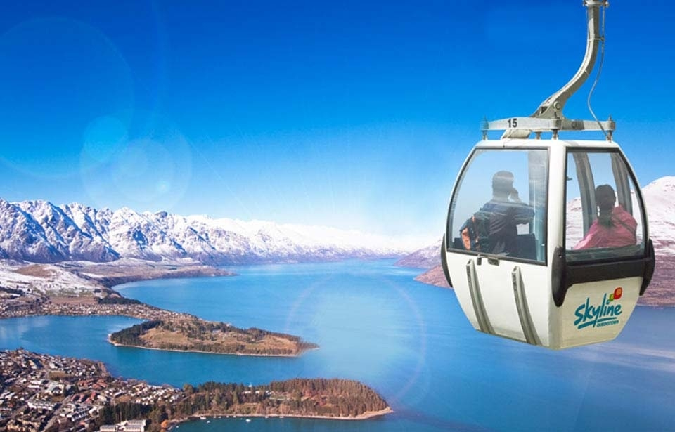
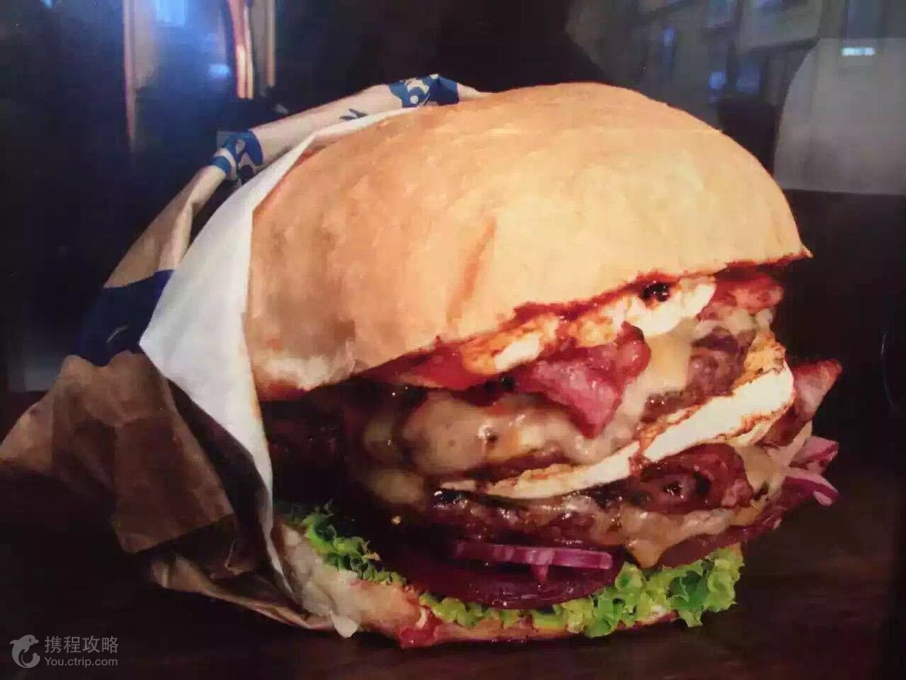
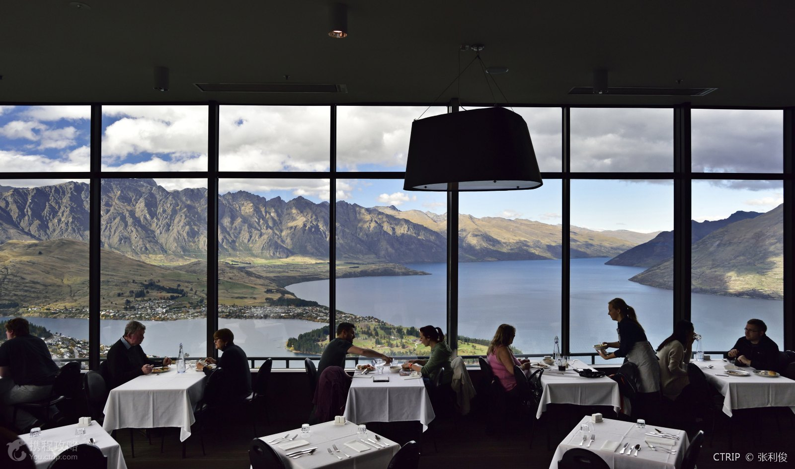
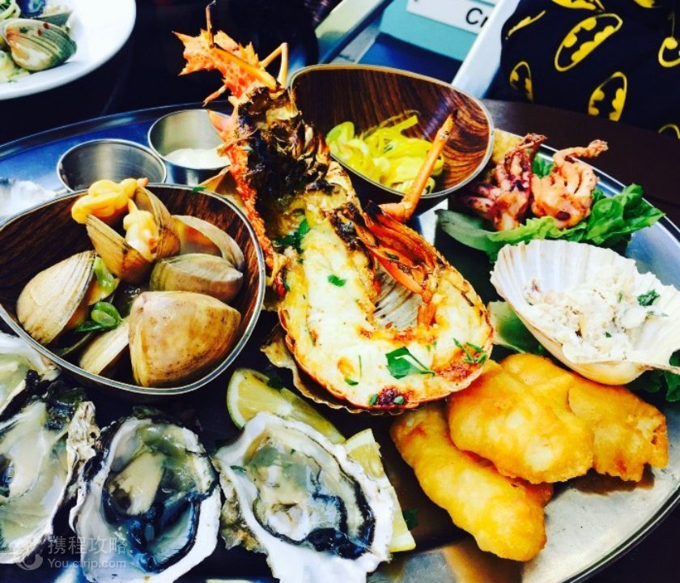
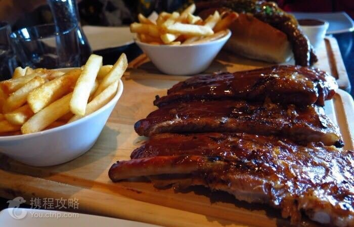
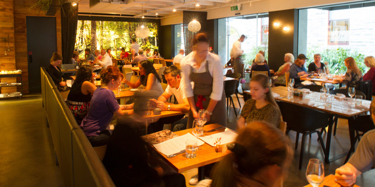

Where and how to play??
Skydiving
Queenstown is the birthplace of Tandem Skydiving in New Zealand, also known as the 'Adventure Capital of the World'. Queenstown in NZ's South Island is the premium place to 'Jump out of a perfectly good Aeroplane'! .

TSS Earnslaw
A cruise on Lake Wakatipu aboard the iconic steamship the TSS Earnslaw is undoubtedly one of the best ways to experience Queenstown’s famed scenic beauty. The leisurely 90 minute cruise across the lake showcases some of Queenstown’s spectacular alpine scenery while offering you plenty of time to explore a piece of Queenstown’s living history – the 104 year old TSS Earnslaw.

WILDERNESS Jet
Walk amongst the ancient beech forest, unchanged for 80 million years. Pass by scenes used in the Lord of the Rings movies to llustrate Middle Earth. An authentic New Zealand experience to an untouched world..

Kawarau Bridge Bungy
1988 by co-founders Henry van Asch and AJ Hackett- if you have heard of Bungy you will have heard about the Kawarau Bridge Bungy! At the Kawarau Bridge we do a traditional foot-tie style Bungy - go at it alone or tandem Jump with a friend. There are great viewing platforms at various points out at the Kawarau Bridge Bungy site.

Skyline Gondola
Wondering what to do in Queenstown? Look no further - The Skyline Queenstown complex offers a whole day’s worth of fun things to do in Queenstown!
Located an easy five minute walk from central Queenstown, Skyline Queenstown offers awe-inspiring views of the region and an abundance of entertainment and adventure for the whole family.

What to eat??
Fergburger
Fergburger is a hamburger restaurant located in Queenstown, New Zealand. Fergburger specialises in gourmet hamburgers, and is quite well known internationally despite not being a chain and only having one location.

Stratosfare Restaurant and Bar
Enjoy a sumptuous buffet Lunch or dinner at Skyline’s Stratosfare Restaurant & Bar, located at the top of the Gondola. The menu is inspired by iconic New Zealand cuisine and infused with international influences, and offers something for everyone - from fresh seafood and delectable desserts to an array of vegetarian dishes.

Fishbone Bar & Grill
location:7 Beach Street, Queenstown.
How lucky are we to live on New Zealand's South Island? Nowhere in New Zealand is more than 125km from an ocean plentiful of seafood.
Fiordland Crayfish , Tarakihi , Southland Lamb , Beef & Reef , Bluff Oysters ,Greenshell Mussel , Paua , Crayfish , Seafood Platter.

Flame Bar & Grill
With a chic, funky interior and a buzzing atmosphere this is fast becoming a firm favourite for Queenstown diners. Flame is quite simply put, “fun dining, South African style! Within walking distance of all major hotels and just metres away from Queenstown bay, you will smell the alluring aroma of Flame food before you even find us. Follow your nose and you will find us tucked away upstairs and embark on an eating adventure you are sure to enjoy.
Rata
Location: Te Nuku, 43 Ballarat St, Queenstown, 9348
Spiced Merino lamb shoulder , Cured Stewart Island salmon, spring peas, wasabi crème fraîche pickled ko , Bluff octopus a la plancha, roast red pepper, saffron aioli , Buttermilk fried chicken, spring tomato harissa , Merino lamb rump , Angus beef eye fillet
